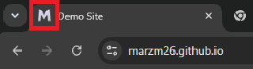
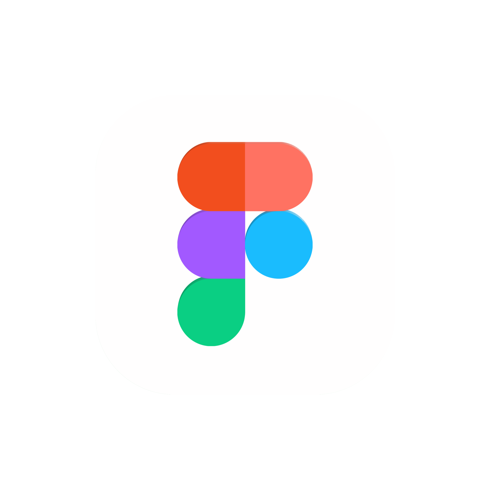
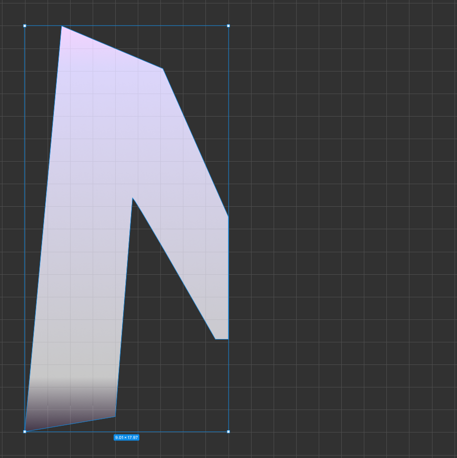
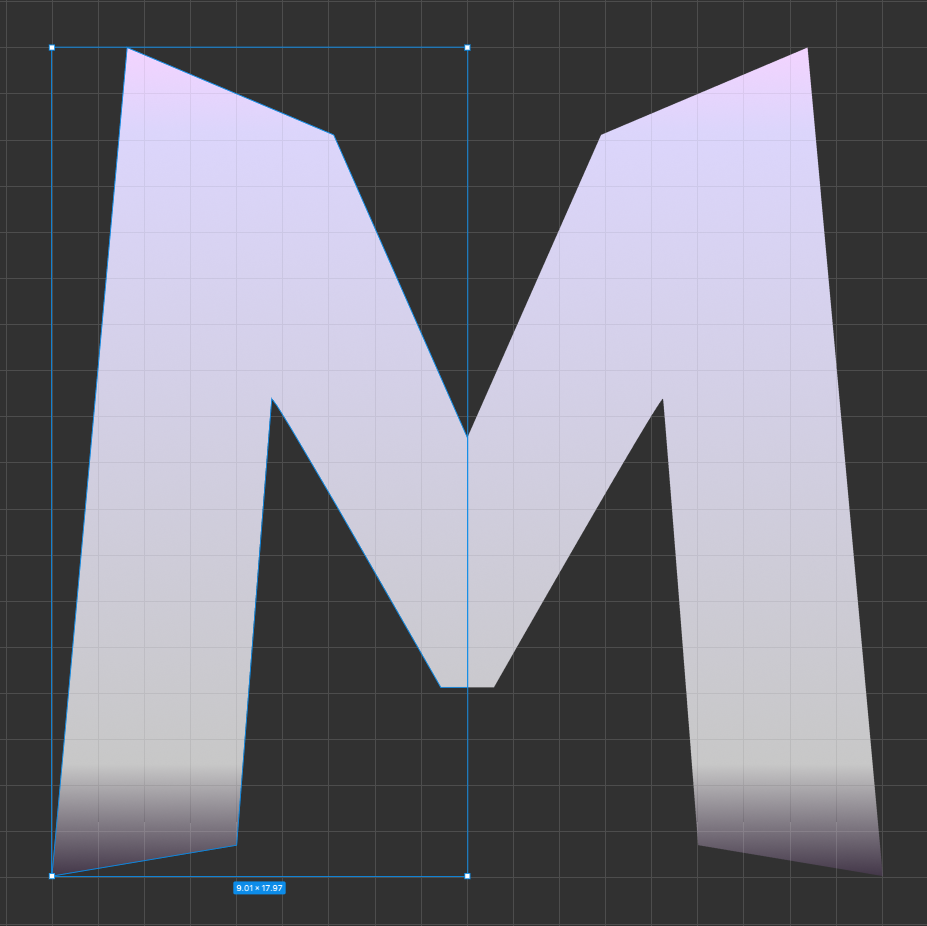
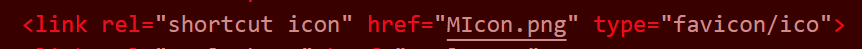

How I made my favicon
This is a brief description of how I made and implemented my Favicon, and maybe a short tutorial on how you can make one too.
What is a Favicon?
In case you aren't familiar, a favicon is the small icon that appears in a browser tab.

1. Open Figma
First, I opened up Figma, which I've been familiar with for a couple of years now.

2. Draw Shape (1/2)
Once in the design interface, I used the pen tool to create one half of the M.

3. Draw Shape (2/2)
Then I duplicated & mirrored the half since it was necessary. This is what I exported to my files.

4. Add to VSCode
Lastly, I uploaded the file to my VSCode project & added this line between the
<head>
tags.

Additional Information
A favicon doesn't need to be very big, so they're typically 16x16 or 32x32 pixels in size. If you want to make one for your own website or whatever other purposes, be sure to export it at a reasonable size.
Resources
The official website for Figma can be found here.
The official website for VSCode can be found here.
Go back